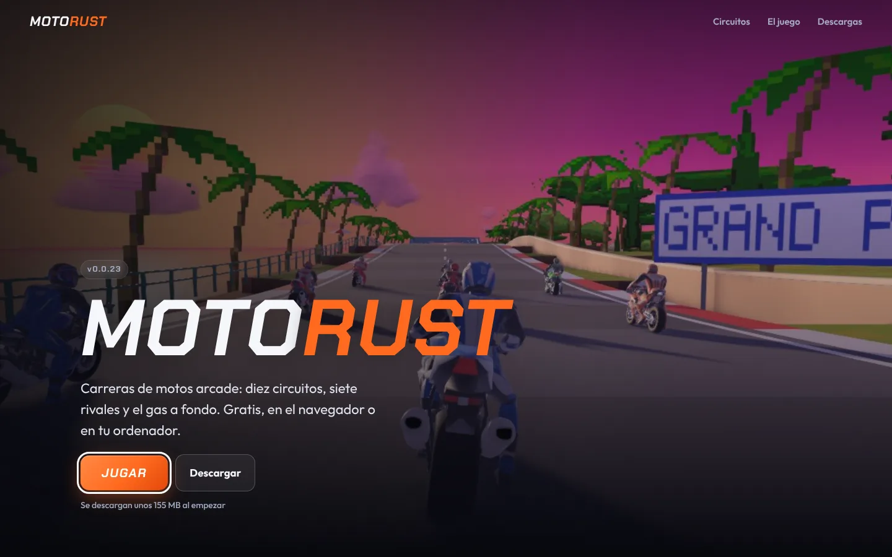
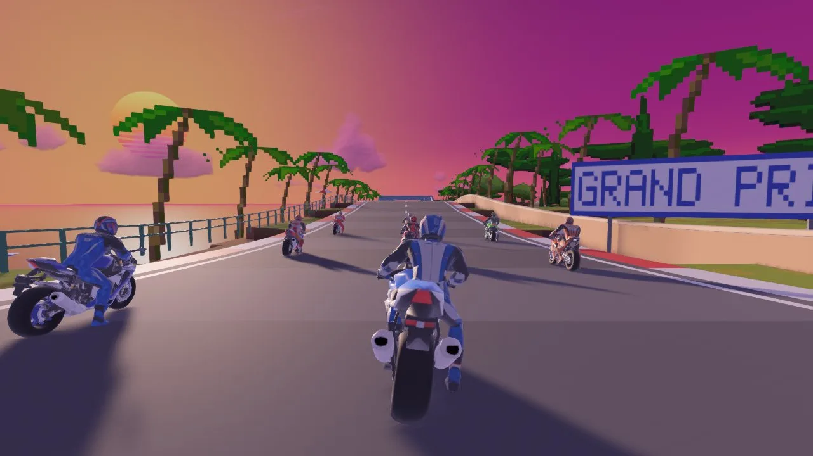

Games
01
Motorust
Arcade motorbike racing, full throttle.
A racing game made in Rust with Bevy: ten tracks, eight bikes and seven rivals that overtake, brake before the corners and swerve around you. Play it free in the browser or download it for Windows, Linux and macOS; the desktop versions update from inside the game.
- Ten tracks, ten worlds: from the coast to outer space, with hills where the bike takes off, banked turns, tunnels, loops and forks.
- Five modes: arcade, race, elimination, time trial and free ride, plus split screen for two players.
- Synthesized sound in real time, with a Doppler effect as you pass a rival, and keyboard or gamepad with remappable controls.
- Rust
- Bevy
- WebAssembly
- WebGL2
- Windows · Linux · macOS

